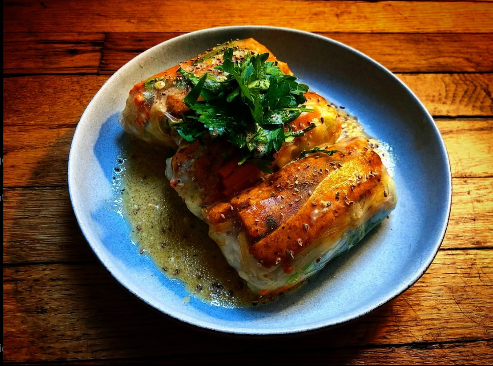

Life
Gap year


After high school, I scrounged my savings and embarked on a year-long journey eastward. Some of the more buzzword-y things I did are:
- Biked 1400 miles across Cambodia and Vietnam
- Lived with a circus in Ethiopia
- Got quarantined for yellow fever
- Climbed a 20,000 foot mountain
- Worked on an olive oil farm in Portugal
- Taught English to kids in Thailand
- Accidentally herded llamas in Peru


Hobbies
Piano
Compositions and classical works. Here are a few recordings:
Running
Cooking
"Eat to live" and "live to eat" aren't mutually exclusive. Here are some highly saturated photos:
